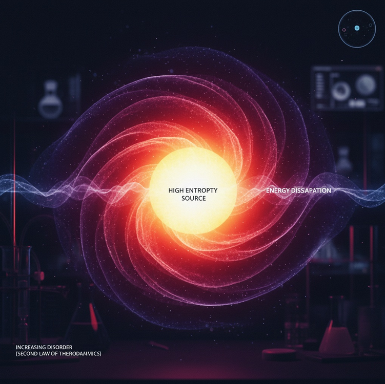

Scientific Definition
Thermodynamics
Entropy (from Greek en- "in" + tropē "transformation") is a fundamental concept in physics that measures the degree of disorder or randomness in a system. According to the Second Law of Thermodynamics, the total entropy of an isolated system can never decrease over time—it either increases or remains constant.
"The entropy of the universe tends to a maximum." — Rudolf Clausius, 1865
In practical terms, this means that energy naturally disperses and systems naturally move toward states of greater disorder. A hot cup of coffee cools down, never spontaneously heating up. A broken glass doesn't reassemble itself. Time flows in one direction.
